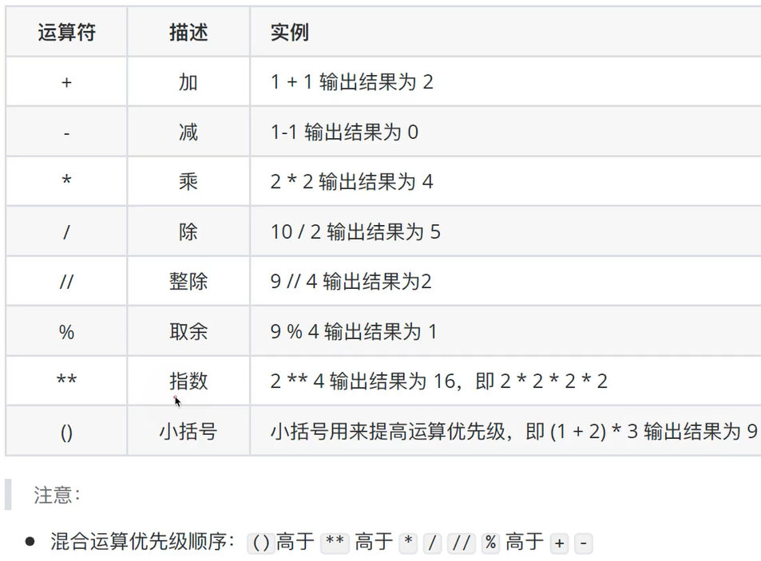
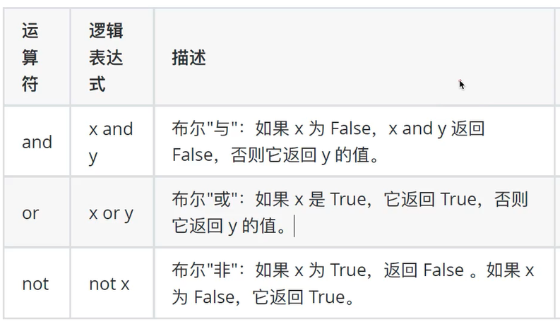

数值: int float
布尔: true false
字符串: str
列表: list [10,20,30]
元组: tuple (10,20,30)
集合: set {10,20,30}
字典: dict {'name':'lzq','age':'18'}
type(数据)可以判断数据类型
print(type(数据))
name = "Alice"
age = 30
print("Hello, %s. You are %d years old." % (name, age))
使用input("提示信息")可以接收用户输入的数据,input会把接收到的任意用户输入的数据都当做字符串才处理
id = input("who are you:")
print("he is %s" %(id))
int(变量)
float(变量)
str(变量)
tuple(变量)
list(变量)
int(变量)
float(变量)
str(变量)
tuple(变量)
list(变量)
算数运算符

逻辑运算符

条件成立执行的表达式 if 条件 else 条件不成立执行的表达式
a = True if 5 > 6 else False
if 条件:
tab键缩进code1
tab键缩进code2
elif 条件2:
tab键缩进code3
tab键缩进code4
else:
tab键缩进code5
tab键缩进code6
注意没有tab缩进的代码就不算if分支里要执行的代码
while 条件:
tab键缩进code1
while循环可以和else配合使用
i = 10
count = 0
while count <= 10:
print("count not bigger than i")
count += 1
if count > 5:
break
else:
print("now count is bigger than i") #循环正常结束(不满足条件结束的情况)才会执行此语句
for 临时变量 in 序列:
code1
else:
code2 #循环正常结束之后要执行的代码
可以一次性存储多个数据,且可以为不同数据类型
内部数据不能被修改
当元组变量中只有一个元素是,主要写法a = (10,),需要在后面加一个逗号
函数的定义
def 函数名(参数):
code1
code2
return xx
函数的说明文档,可以使用help函数,help(函数),自己定义的函数也可以写说文档
def fun():
"""
this fun is empty
"""
函数可以设置不定长参数,也叫可变参数,用于不确定调用的时候会传递多少个参数(0到多个)的场景。
#位置参数传递方式
def 函数名(*args): #args 在函数内部是一个元组类型
code1
code2
return xx
#关键字参数传递方式
def 函数名(** kwargs): #kwargs 在函数内部是一个字典类型
code1
code2
return xx
变量并不直接存储数据本身,而是存储了数据的引用(或者说是内存地址)。理解这一点对于理解Python中可变类型(mutable types)和不可变类型(immutable types)的行为至关重要
不可变类型包括整数(int)、浮点数(float)、字符串(str)和元组(tuple)等。一旦创建了这些类型的对象,就不能改变其内部状态。如果你试图修改一个不可变类型的对象,实际上Python会创建一个新的对象,并将变量名指向这个新对象。
可变类型包括列表(list)、字典(dict)、集合(set)等。这些类型的对象在被创建后,其内容(即对象内部的状态)可以被修改。
class 类名():
代码
类中的slef使用,self是一个对当前实例(对象)的引用,用于访问属于该类的变量和方法。当你在类的方法中定义self 时,它允许你访问类的属性和其他方法
class myclass():
def fun2(self):
print("what")
def fun(self):
self.fun2()
print(self)
aa = myclass()
print(aa)
aa.fun()
类中增加成员变量
class Person:
def __init__(self, name, age): #相当于类的构造函数
# 在这里初始化实例变量
self.name = name # 初始化name实例变量
self.age = age # 初始化age实例变量
def greet(self):
# 使用实例变量
print(f"Hello, my name is {self.name} and I am {self.age} years old.")
# 创建一个Person类的实例
person1 = Person("Alice", 30)
# 调用实例的greet方法
person1.greet() # 输出: Hello, my name is Alice and I am 30 years old.
这里再介绍一下__init__和__del__
__init__ 和 __del__ 是两个特殊的方法(也称为魔术方法或双下划线方法),它们在类的实例生命周期中扮演着重要的角色。
__init__ 方法是一个类的构造函数。当创建类的新实例时,Python会自动调用这个方法。它的主要目的是初始化新创建的对象。
你可以在这个方法中设置实例的初始状态,比如为实例变量赋初值。
__del__ 方法是一个类的析构函数(或称为终结器)。当Python的垃圾回收器决定销毁一个对象时,它会调用这个对象的__del__方法(如果该方法已定义)。
但是,需要注意的是,并不是在对象被删除时立即调用__del__,而是在对象的最后一个引用被删除,且垃圾回收器执行回收时调用。__del__方法通常用于执行清理操作,比如关闭文件、释放资源等。
然而,由于Python的垃圾回收机制是自动的,并且__del__方法的调用时机是不确定的,因此通常建议使用上下文管理器(通过with语句)或显式关闭资源(如使用close方法)来管理资源,而不是依赖__del__。